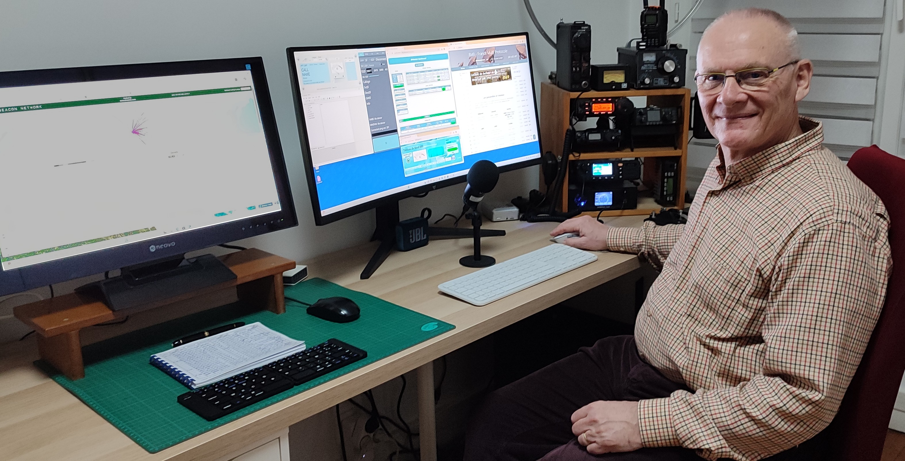

Bienvenue sur le site de la station radioamateur F6CYK.
Ce site rassemble la description de la station, du matériel utilisé, des antennes, des réalisations techniques ainsi qu'une documentation issue de plusieurs années d'expérimentations.

21 juillet 2026